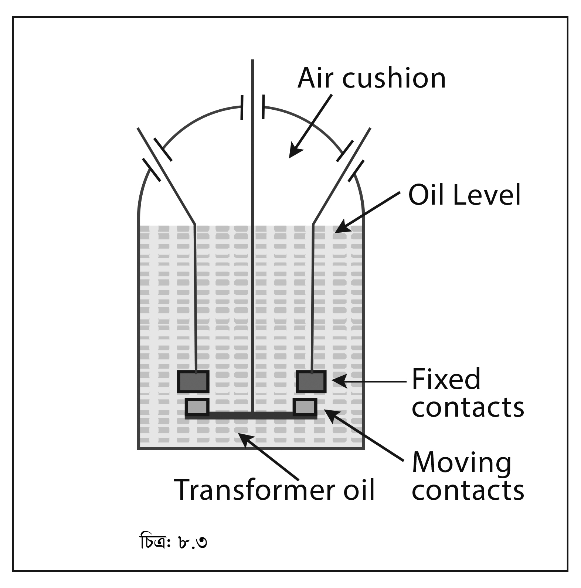

<div class="content">
    <div class="scroller">
        <p class="page-no">140</p><br><br>
        <h2></h2>
        <div>
            <p><b>সার্কিট ব্রেকার অ্যানালাইসিস সম্পর্কিত কিছু গুরুত্বপূর্ণ সংজ্ঞা</b></p>
            <p><b>রিস্ট্রাইকিং ভোল্টেজ (Restriking Voltage):</b> আর্ক নির্বাপণের মুহূর্তে সার্কিট ব্রেকারের টার্মিনালে যে লব্ধি ট্রানজিয়েন্ট ভোল্টেজ আর্ককে পুনঃজীবিত করতে চেষ্টা করে তাকে রিস্ট্রাইকিং ভোল্টেজ বলে।</p>
            <p><b>রিকভারি ভোল্টেজ (Recovery Voltage):</b> যখন বিভিন্ন হারমোনিকস (Harmonics)-এর অসিলেশন (Oscillation) নরমাল ফ্রিকুয়েন্সিতে থাকে তখন সার্কিট ব্রেকারের পোল টার্মিনালে যে কার্যকরী ভোল্টেজ পাওয়া যায় তাকে রিকভারি ভোল্টেজ বলে। এটি রেটেড সার্কিট ভোল্টেজ এর প্রায় সমান।</p>
            <p><b>আর্ক ভোল্টেজ (Arc Voltage):</b> আর্কিং (Arcing) এর সময় সার্কিট ব্রেকারে কণ্টাক্ট পয়েন্টে যে ভোল্টেজ  উৎপন্ন হয়, তাকে আর্ক ভোল্টেজ বলে।</p>
        </div>
        <div>
            <h4 class="topic-title-no">৮.৪</h4>
            <h4 class="topic-title">নিম্নলিখিত সার্কিট ব্রেকারের গঠন এবং পরিচালনার মূলনীতি</h4>
            <h4 class="topic-title">(Describe the Construction and the Principle of Operation of the Following Circuit Breakers):</h4>
            <p><b>
                    a.	Plain-Break Type Circuit Breaker.
                </b>
            </p>
            <p><b>
                    b.	Oil Circuit Breaker (OCB)
                </b>
            </p>
            <p><b>
                    c.	 Low oil Content Circuit Breaker.
                </b>
            </p>
            <p><b>
                    d.	Air Circuit Breaker (ACB).
                </b>
            </p>
            <p><b>
                    e.	Gas [Sulphur-Hexafluoride, SF6] Circuit Breaker.
                </b>
            </p>
            <p><b>
                    f.	Vacuum Circuit Breaker (VCB).
                </b>
            </p>
        </div>
        <p class="c-align">
            
        </p>
        <p class="c-align">চিত্র- ৮.৩:
            <span class="tooltip_my">
                <i class="fa fa-play-circle video-class" videosrc="videos/140/5.2 ANIMATION- Plain Break Oil CB modified.mp4" style="font-size: 20px;" aria-hidden="true"></i>
                <span class="tooltiptext">click here to see the video</span>
            </span>
        </p>

        <div>
            <p><b>প্লেন ব্রেক অয়েল সার্কিট ব্রেকারের সুবিধা ও অসুবিধাসমূহ :</b></p>
            <p><b>সুবিধাসমূহ (Advantages):</b></p>
            <p>১। 	এর গঠন সহজ ও সরল;
                <br>  ২। 	হাতে বা স্বয়ংক্রিয়ভাবে পরিচালনা করা যায;
                <br>৩। 	এর বুশিং-এ কারেন্ট ট্রান্সফরমার স্থাপন সহজ হয়;
                <br>৪।	 আর্ক নির্বাপণের বিশেষ ব্যবস্থা গ্রহণ করা লাগে না।
            </p>
            <p><b>অসুবিধাসমূহ (Disadvantages):</b></p>
            <p>১। চলমান কণ্টাক্টকে দূর সরানো ছাড়া আর্ক নির্বাপণের উপর অন্য কোন control নাই;
                <br>২। আর্ক নির্বাপন করতে বেশি arc length এর প্রয়োজন হয়;
                <br>৩। আর্ক নির্বাপণের জন্য বেশি সময় লাগে;</p>

        </div>
    </div>
</div>
